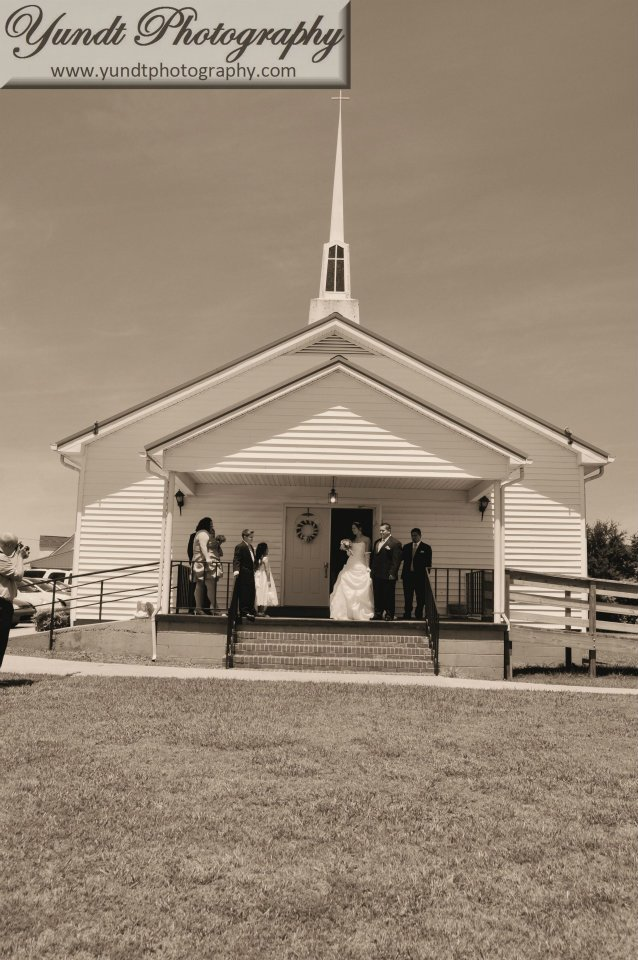

Woodleaf Baptist Church was founded and built in 1978. With only a hand full of people they felt the Spirit of God leading them to build a new church in Woodleaf. There was no Baptist church in this section of Rowan county. Through the years the faces have changed but our heart as a church has remained the same, to reach out to broken people with the encouragement of God’s Word.
We started a weekly prison ministry in 1999 and it continues till today. 1,000’s have been reached behind bars with the good news of God’s Love and we have witnessed many changed lives and restored families through this ministry. In August of 1991, God sent Rev. Chris Williams as our pastor and he continues to serve our church family and this community to the present time.

Woodleaf Baptist Church
7790 Woodleaf Rd
Woodleaf, North Carolina 27054